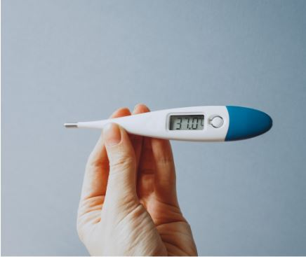
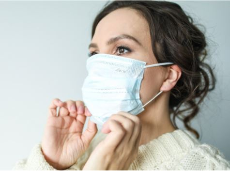

Los síntomas más comunes de la COVID-19 son: fiebre, tos seca y cansancio. Otros síntomas menos frecuentes que pueden afectar a algunos pacientes son: pérdida del gusto o el olfato, dolores, dolor de cabeza, faringoamigdalitis, congestión nasal, ojos enrojecidos, diarrea o erupción cutánea.
Permanecer en casa en autoaislamiento, aun cuando tenga síntomas leves tales como tos, dolor de cabeza y febrícula, hasta que se recupere. Llame y solicite orientación a su dispensador o servicio telefónico de atención de salud. Pida que alguien le lleve lo que necesite. Si tiene que salir de su casa o necesita que alguien esté con usted, póngase una mascarilla médica para no infectar a otras personas.
Si tiene fiebre, tos y dificultad para respirar busque atención médica de inmediato. Primeramente llame por teléfono, si puede, y siga las instrucciones de su autoridad sanitaria local.

Cuidados y medidas que debes adaptar
Guarde al menos 1 metro de distancia entre usted y otras personas, a fin de reducir su riesgo de infección cuando otros tosen, estornudan o hablan.
Lávese las manos antes de ponerse la mascarilla, y también antes y después de quitársela y cada vez que la toque.
Asegúrese de que le cubre la nariz, la boca y el mentón.
Cuando se quite la mascarilla, guárdela en una bolsa de plástico limpia; si es de tela lávela cada día y si es una mascarilla médica, tírela a un cubo de basura.
No utilice mascarillas con válvulas.
Cómo reforzar la seguridad de tu entorno
Evite las 3 “C”: espacios cerrados, congestionados o que entrañen contactos cercanos. Se han notificado brotes en restaurantes, ensayos de coros, clases de gimnasia, clubes nocturnos, oficinas y lugares de culto en los se han reunido personas, con frecuencia en lugares interiores abarrotados en los que se suele hablar en voz alta, gritar, resoplar o cantar.
Los riesgos de contagio con el virus de la COVID-19 son más altos en espacios abarrotados e insuficientemente ventilados en los que las personas infectadas pasan mucho tiempo juntas y muy cerca unas de otras. Al parecer, en esos entornos el virus se propaga con mayor facilidad por medio de gotículas respiratorias o aerosoles, por lo que es aún más importante adoptar precauciones.
Reúnase al aire libre. Las reuniones al aire libre son más seguras que en interiores, en particular si los espacios interiores son pequeños y carecen de circulación de aire exterior.
En caso de no poder evitar las reuniones al aire libre, abre una ventana y asegúrate de usar una mascarilla.

No debemos olvidar la higiene
Lávese periódica y cuidadosamente las manos con un gel hidroalcohólico o con agua y jabón. Esto elimina los gérmenes que pudieran estar en sus manos, incluidos los virus.
Evite tocarse los ojos, la nariz y la boca. Las manos tocan muchas superficies en las que podrían coger el virus. Una vez contaminadas, pueden transportar el virus a los ojos, la nariz o la boca. Desde allí el virus puede entrar en el organismo e infectarlo.
Al toser o estornudar cúbrase la boca y la nariz con el codo flexionado o con un pañuelo.
Limpie y desinfecte frecuentemente las superficies, en particular las que se tocan con regularidad.